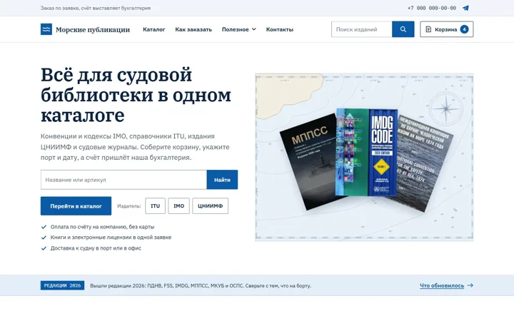
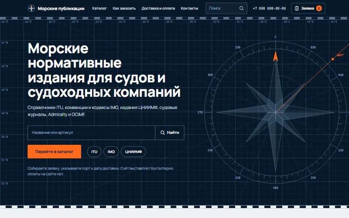

Вариант 1. Издательский каталог
Светлый и строгий, как каталог издательства. На первом экране веер обложек, каталог плотным списком с артикулами.
Два варианта оформления. В каждом есть главная, каталог, карточка издания и заявка, на компьютере и на телефоне. Каталог и обложки настоящие, заявка работает в демо-режиме и никуда не отправляется. Выберите вариант, который ближе, правки внесём в выбранный.

Светлый и строгий, как каталог издательства. На первом экране веер обложек, каталог плотным списком с артикулами.

Морской, с характером. Тёмный первый экран с сеткой морской карты и розой ветров, ниже светлые разделы и карточки с обложками.
Рабочее название, телефон, почта и реквизиты на макетах условные. Страница закрыта от поисковиков.